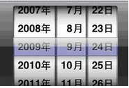

[知乎]答：为什么现在的 GUI 设计仍跳不出 button、list、icon，没有这些元素的 GUI 会是什么样子？
此为知乎上的一个提问，原文在这里。
button,list等作为一些基础控件，从较高的层面讲，他们阐释了基本的交互语言，从而实现界面交互；就像在研究素描时，大多也就可以由三角形、圆形、矩形等构成（图一）。

举个例子吧，图二是一个颜色拾取板，简单分析一下，就会发现其实这一圈就是个list，只不过和一般直直的list不同，每个item进行了固定角度的旋转。

再如1l所说的日期选择控件（图三），仍然逃不过所谓的button，list的命运。
我们可以叫他新控件，也可以叫做旧控件的新组合（并算不上新的交互）。

因此，在控件设计时往往有一项准则：
如果可以用以往的基本控件来组合，那么就不要重新创造一个新控件。
个人看来，我们现在所说的新控件，往往是添加或重组了交互方式/顺序，并未能跳出基本控件的框框。（欢迎lx举出例子来反驳）
至于button，list这些基本控件是如何设计出来的，只能佩服前人的创造，简洁而又强大。
这样应该能够回答lz的“为什么现在的 GUI 设计仍跳不出 button,list的框架”这个问题。
Add：
看了一些回答，有的从与日常生活的映射角度来分析。
突发奇想，要是从集合论的角度，
所有物体的集合对应list，
而对物体的操作对应button，
如此似乎能解释这些基础控件的起源=。=
想法不靠谱，额嗬嗬嗬嗬嗬嗬嗬嗬，，，